26 NOVEMBER 2026 · CONTENT / PHOTOGRAPHY ONLY · NOT DEPLOYED
The real Mangosteen.
The approved design.
The website layout, typography, palette, masks, motion and working business flows are preserved. Genuine café photographs now replace generic interiors, staff/lifestyle concepts, the counter and façade. The menu landing uses a retained original rather than its AI-assisted restoration.
48 animation declarations checked · all motion/interaction hook callbacks unchanged · 26/26 measured image containers unchanged · 10/10 original source photographs unchanged · 5/5 sampled burger canvas hashes identical.
Before and after
Brand introduction
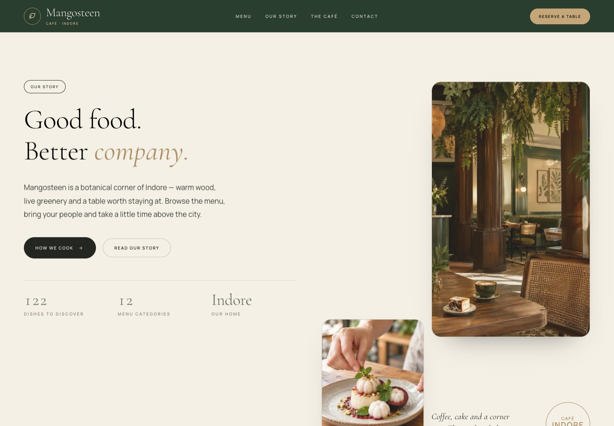
Approved design · previous imagery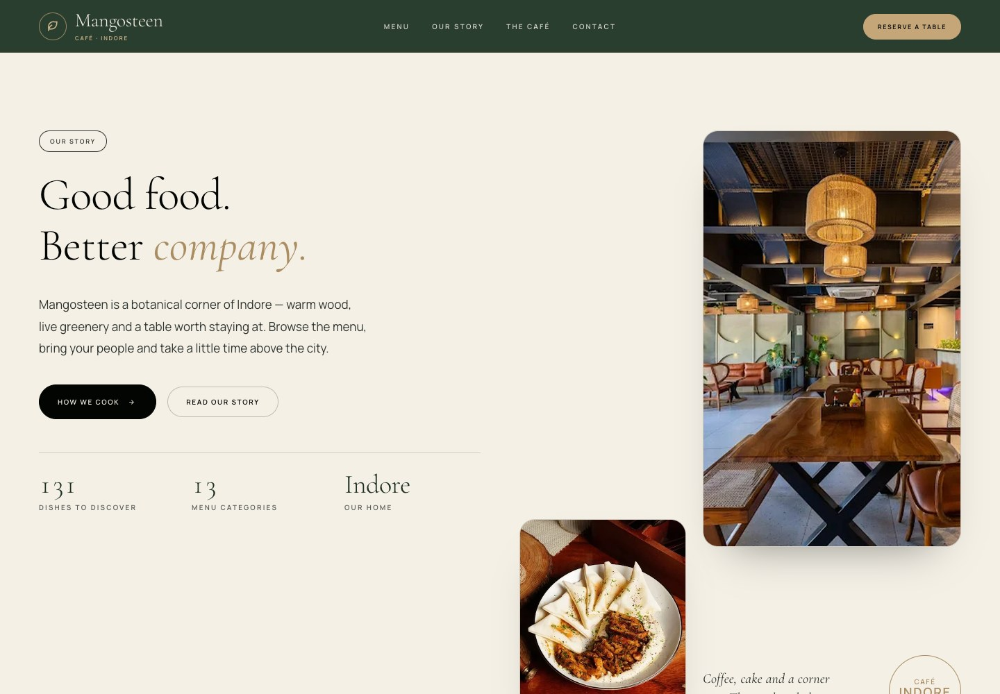
Same design · genuine Mangosteen photographyBuilt on the Counter
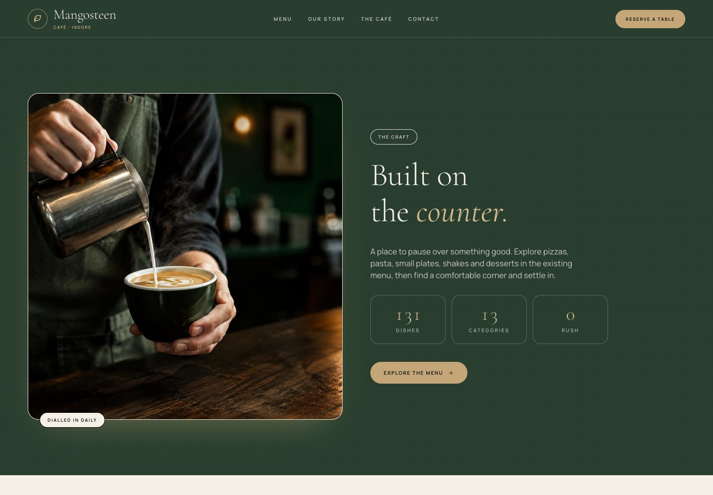
Approved design · previous imagery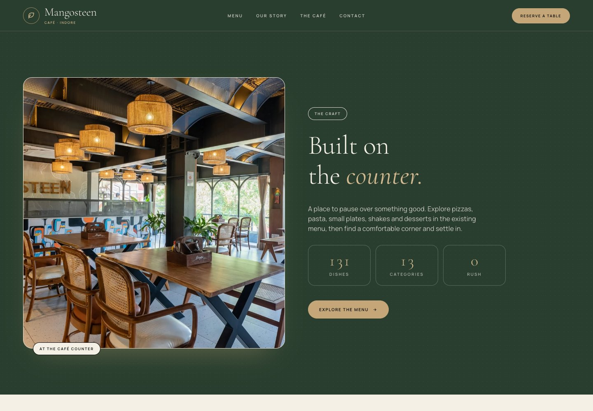
Same design · genuine Mangosteen photographyCafé lifestyle
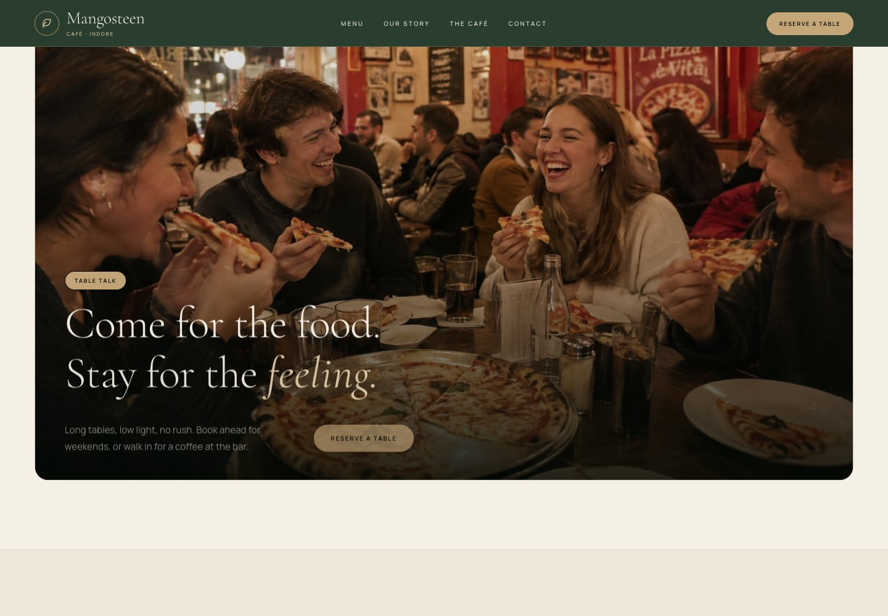
Approved design · previous imagery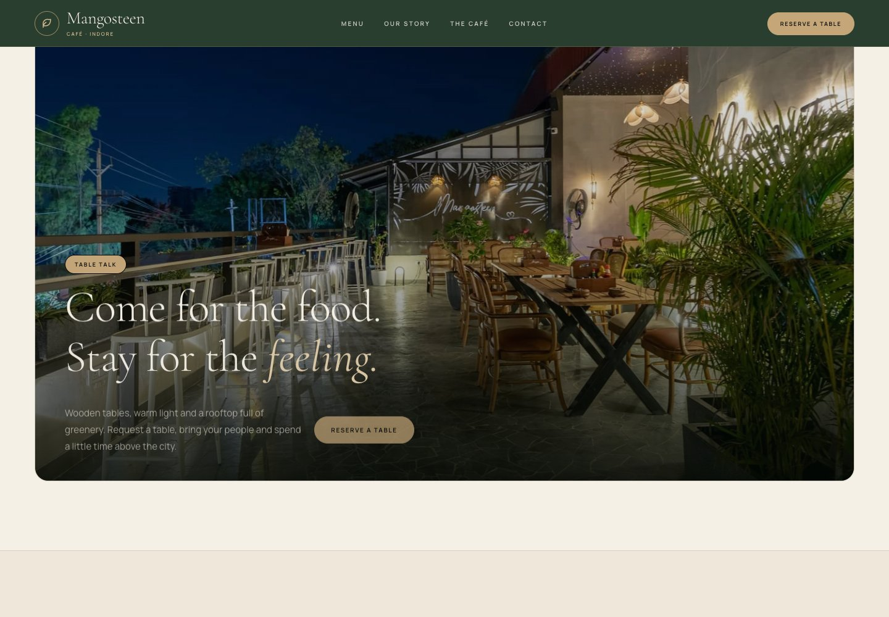
Same design · genuine Mangosteen photographyActual exterior and visit information
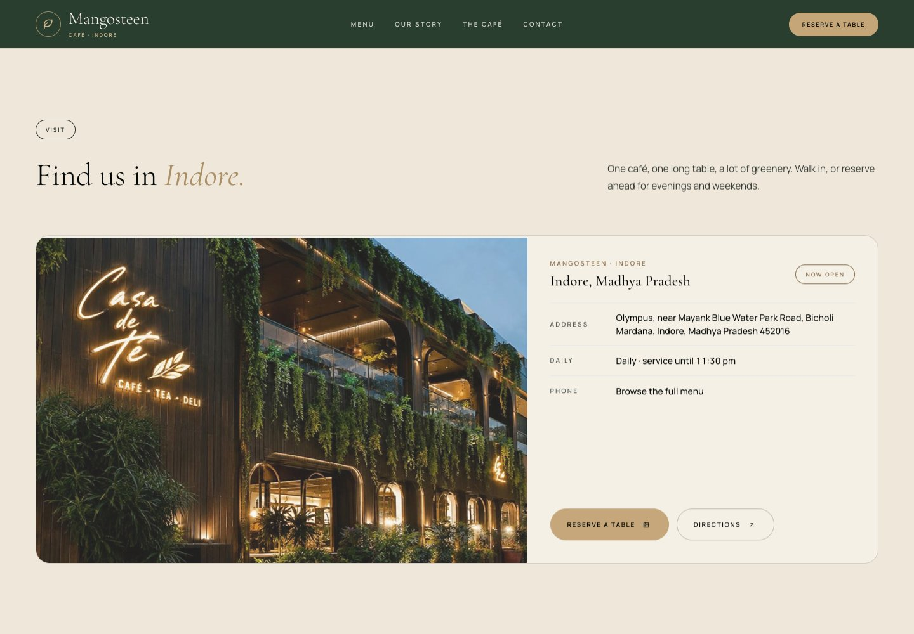
Approved design · previous imagery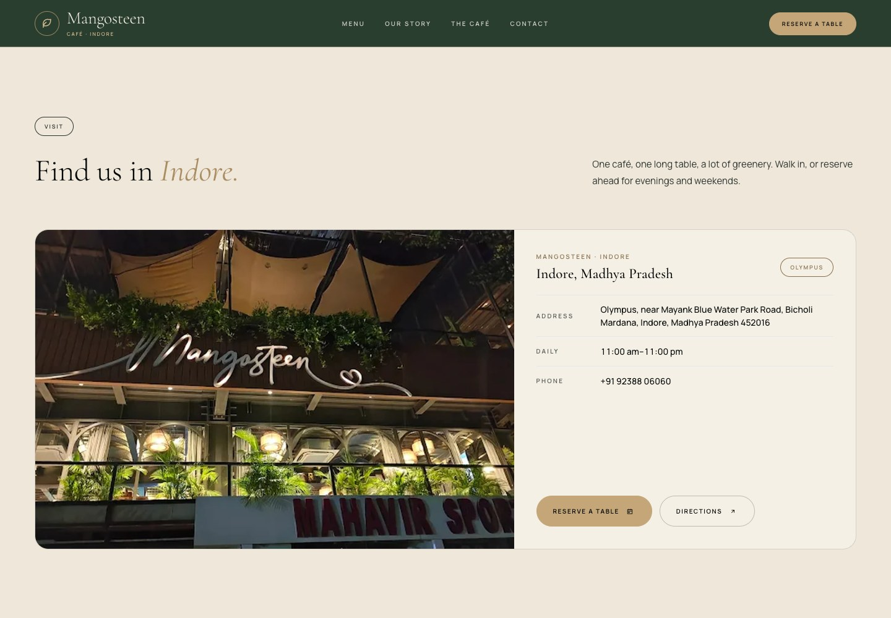
Same design · genuine Mangosteen photographyDigital menu landing
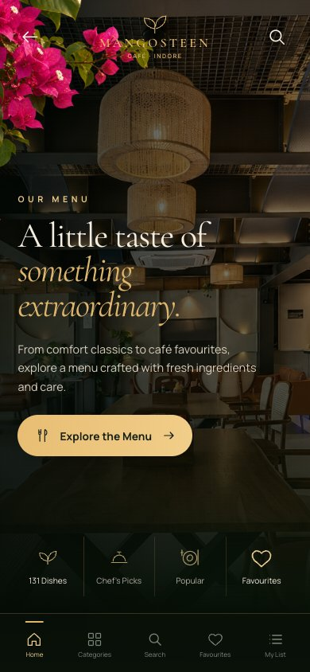
Approved design · previous imagery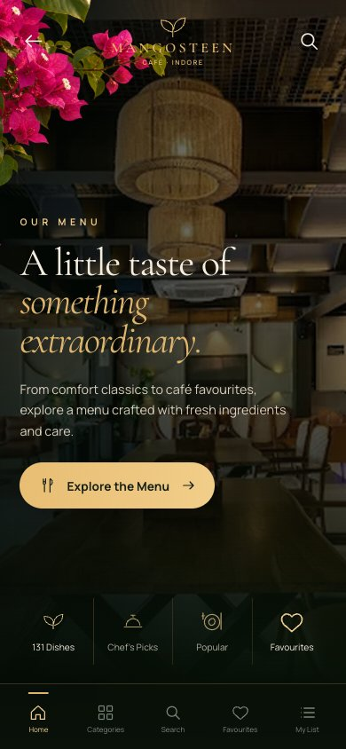
Same design · genuine Mangosteen photographyOur Story
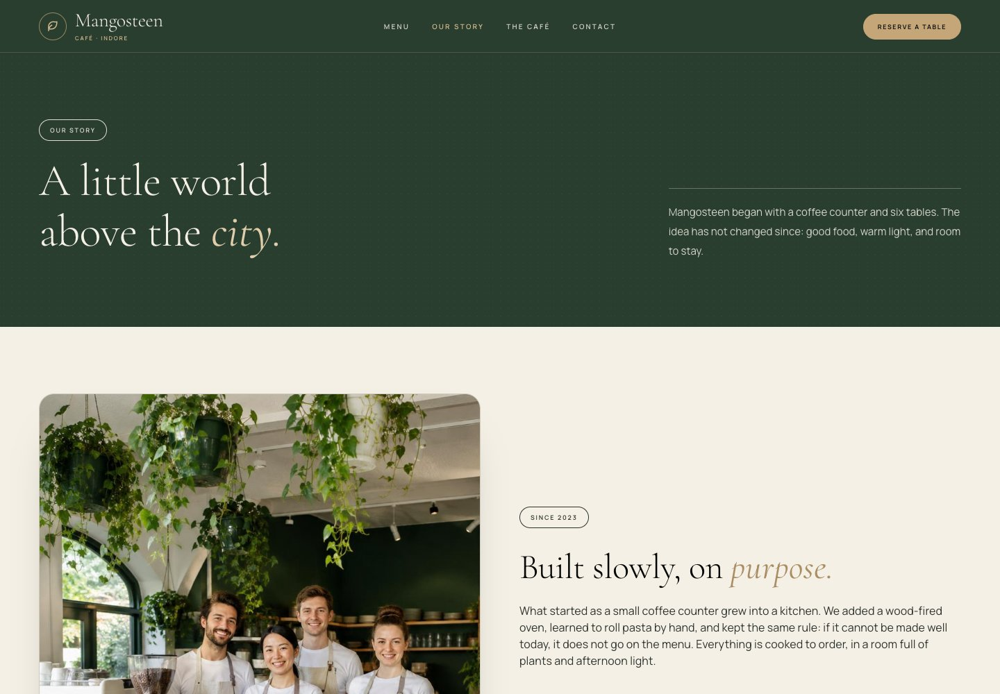
Approved design · previous imagery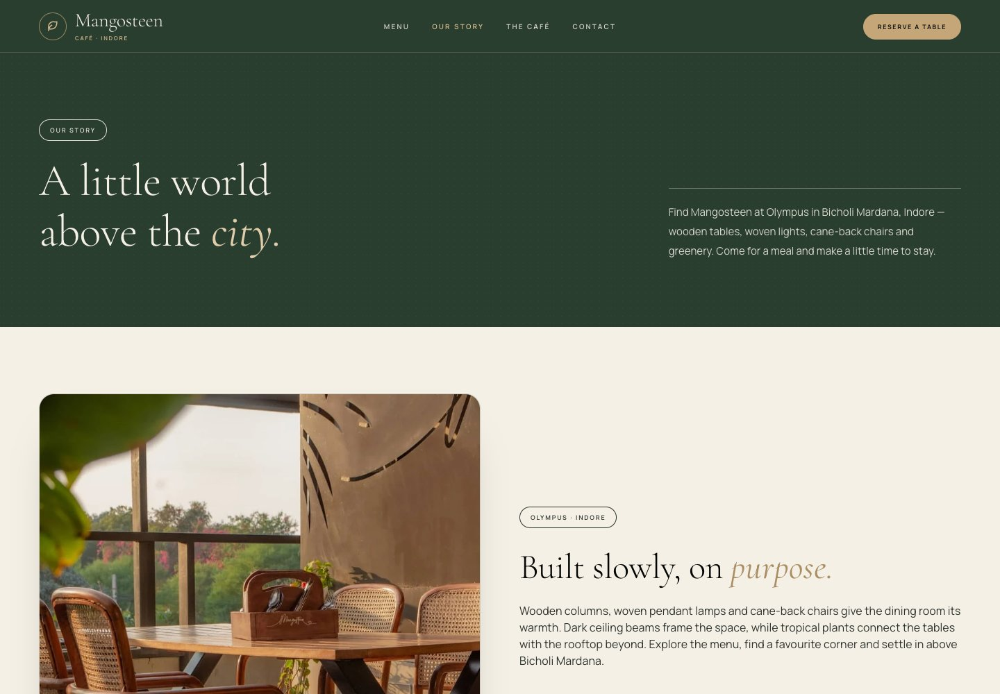
Same design · genuine Mangosteen photographyThe Café
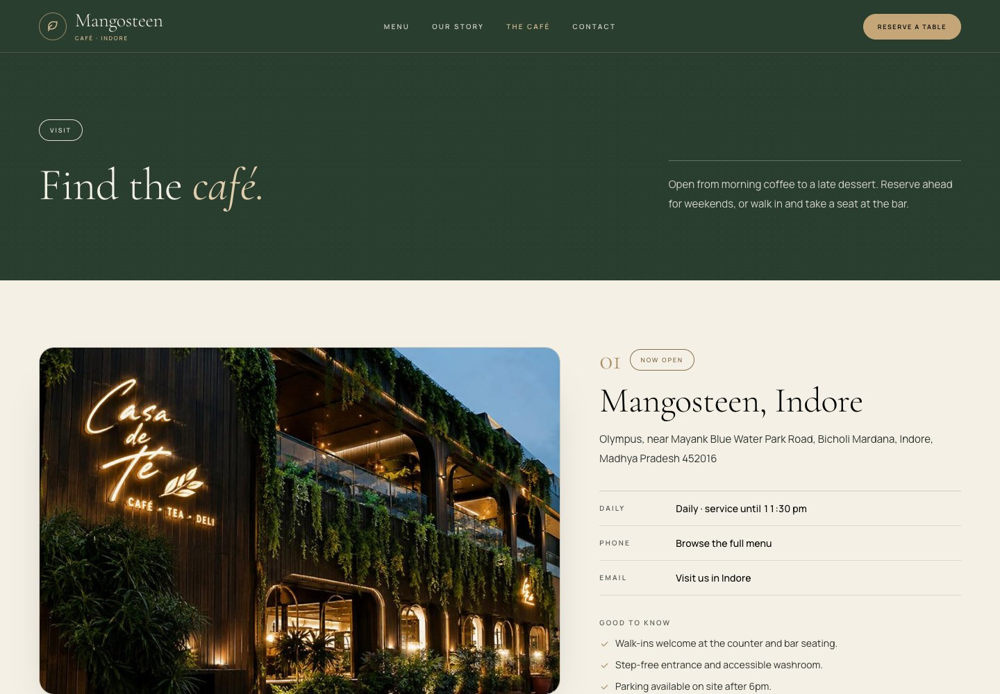
Approved design · previous imagery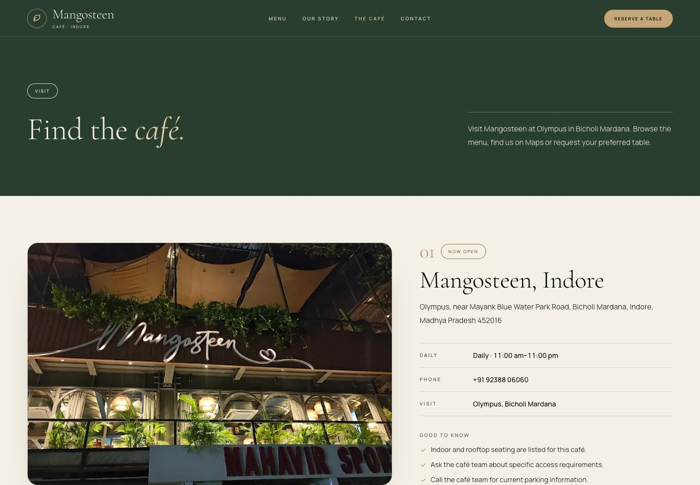
Same design · genuine Mangosteen photographyWhat remains missing
No source photograph can yet be matched confidently to a named menu dish. The one genuine overhead meal has no confirmed dish identity. Existing food illustrations remain temporarily, as instructed, and are flagged. Required: 131 genuine named-dish photographs, 13 category food banners, 48 verified descriptions, dietary data and current owner-approved pricing.
Burger artwork review flag
The approved animation is unchanged. Its double-patty artwork does not match the existing Mangosteen chicken burger’s listed chicken patty and egg. No food identity was inferred, and no replacement artwork was generated. Ingredient text describes the illustration rather than claiming a real recipe.
Before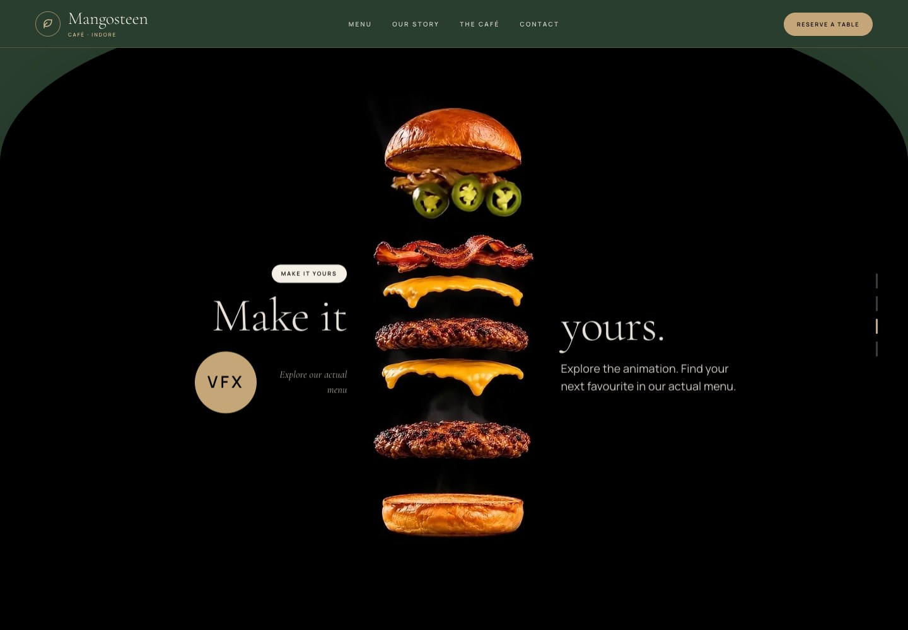
After · canvas pixel hashes unchanged Photo replacement report
Retained genuine source library

Original files are preserved. New WebP assets use crops and resizing only. Generated categories, stock dish references, unverified food stills and old VFX/test frames are excluded as evidence of actual Mangosteen dishes.
Business information
Address, listed phone, hours and Maps pin were checked against the Zomato business listing. The existing footer social slot now links to the matching company page. No email or Instagram was guessed.
The complete existing catalogue is retained as an indicative snapshot; fresh owner certification is still needed. The schematic seating IDs/capacities are unchanged and require an owner-confirmed floor plan. Reservations continue as requests pending staff confirmation.
Verification
Production build and all 9 existing backend tests pass. Before/after photographic checks have no new page errors or missing assets. Responsive overflow checks pass at 320–1920 px. Search, favourites, selection, Table 4 demo ordering, full reservation submission, CRM authentication/dashboard/queues/settings passed against a disposable actual Python/SQLite API.
Local Chrome checks, including touch-sized layouts. The pre-existing protected phone-regex console warning remains documented. No new field performance or physical-device claims.
Full implementation report and modified files
MANGOSTEEN — AUTHENTIC CONTENT AND PHOTOGRAPHY UPDATE
26 November 2026 · Local implementation · Not deployed
INSPECT
Homepage: http://127.0.0.1:5173/
Approved menu: http://127.0.0.1:5173/menu
Table 4: http://127.0.0.1:5173/menu?table=4
Review: http://127.0.0.1:5173/artifacts/mangosteen-authentic-content-review/index.html
RECOVERY
Branch: mangosteen-authentic-content
Implementation commit: 1b0cc88
Approved design preserved: checkpoint/approved-design-d7a8e55 at d7a8e55
The review evidence commit follows the implementation. No branches/history removed.
The user's untracked src/components/FullMenuDialog.tsx remains untouched.
WHAT CHANGED
Nine responsive photograph treatments now use retained genuine Mangosteen images:
main dining, the unidentified photographed meal, rooftop menu invitation, actual
counter, evening rooftop, illuminated façade, evening dining, cane-chair detail
and the digital-menu interior background. The menu landing no longer uses the
AI-assisted restoration. Side pages no longer show fictional staff/interiors.
31 WebP crop/size variants were made without changing originals, architecture,
food presentation, ingredients, exposure or colour. Alt text describes the actual
space. Existing image masks, sizes, object-fit classes, timing and containers remain.
Invented founding history, 48-hour preparation claims, fictional staff text,
unsupported private-event/parking/access claims and placeholder contacts were
removed or replaced with supported facts. Actual catalogue names/descriptions/
prices remain shared with the existing menu. Footer contact actions now point to
the listed phone, actual Maps pin and the matching company social profile.
No new section, component design, typography, palette or layout was introduced.
DESIGN PRESERVATION
All 5 sampled burger canvas hashes match before/after exactly at 0/25/50/75/100%.
All 26 measured homepage image-container dimensions are unchanged.
48 animation declarations are verified: logic unchanged;
only two contain permitted wording/alt-text updates. All
0 animation/interaction hook callbacks are byte-identical.
All marketing styles, route-transition controller, integration controller,
reservation UI, seating source and complete catalogue are unchanged.
Layout classes/styles/dimension values are unchanged. Two semantic footer icon
glyphs now represent verified social/maps destinations, in the same existing slots.
All 10 original café/source photographs match their previous SHA-256 hashes.
79 of 83 protected baseline files are unchanged; the four authorized content
exceptions are menu photograph references/status copy, café facts, menu photo
metadata and HTML business metadata. Backend/CRM/API/auth/booking logic unchanged.
FOOD PHOTOGRAPHY — IMPORTANT LIMITATION
No available genuine photograph can be confidently matched to a NAMED catalogue
dish. The actual overhead meal is used only as an unlabelled café photograph.
Do not infer its dish identity. It needs an owner-confirmed name before catalogue use.
As explicitly instructed, current food pictures remain temporarily rather than
silently substituting a different meal. Illustrative labels are retained, menu
fallback slots say Photo pending, and dish details explain the missing original.
Complete missing inventory: 131 named-dish photographs, 13 category food banners,
48 verified descriptions, dietary/allergen data, and current owner-approved prices.
The complete existing 131-dish / 13-category snapshot is byte-identical. It is
indicative, not newly certified current pricing. Public menu extraction was blocked
(IndiaRestros 403; Zomato scanned menu pages lacked extractable records).
No dish, price, dietary flag, ingredient or popularity claim was invented.
Existing category banners now have an explicit category-specific mapping,
independent of the first dish. All 13 are distinct, temporary illustrations.
No additional AI/stock category image was generated or downloaded for this update.
The six marketing dish images remain illustrative pending exact original photographs.
BURGER REVIEW FLAG
The preserved artwork depicts a double-patty burger with cheese and other layers.
The existing Mangosteen chicken burger description lists a herbed chicken-and-cheese
patty, sunny-side egg, spicy tartare and relish. The artwork cannot be certified as
that actual item. Animation assets/movement remain unchanged, as requested.
Visible ingredient notes describe the artwork rather than an actual menu recipe.
Owner-approved matching photographic/animated layers are required before replacing it.
SEATING / PERMISSIONS
The existing reservation interface contains no photo slots. None were added.
Rooftop/indoor seating are corroborated by the public business listing, but the
existing cluster IDs, capacities and schematic plan have no owner-surveyed source.
An actual table plan and staff validation are still required. No new fictional
arrangement or live availability was introduced; reservations remain requests.
No generated customers/staff were substituted. The retained low-resolution
promotional film was audited but not used: named dish identity and portrait usage
permissions are not established, and promotional text is baked into the footage.
BUSINESS SOURCES CHECKED
Primary: https://www.zomato.com/indore/mangosteen-cafe-by-pass-road-north
Address: Olympus, Bicholi Mardana, near Mayank Blue Water Park, Indore.
Listed phone: +91 92388 06060. Listed hours: 11am–11pm, with daily schedule
corroborated by the secondary listing. Directions pin from the primary listing:
22.706144,75.924299. Approximate listed cost: ₹800 for two.
The source-labelled 4.5/1,227 Zomato dining rating replaces unlabelled historical
values in metadata; it is not presented as Google ratings or new testimonials.
Company social: https://in.linkedin.com/company/mangosteencafe
No confirmed email/Instagram was added. Public listings are not phone/owner
confirmation; operational hours and current prices should still be owner-checked.
See business-sources.json for details and source access limitations.
VERIFICATION
Production build / TypeScript: PASS. Existing backend tests: 9/9 PASS.
Browser photographic comparison and frame hashes: PASS, no new page errors or
bad responses. Homepage responsive checks: 320,390,768,1024,1440,1920 pixels,
plus the protected menu checks at 320,390,768,1440,1920: no horizontal overflow.
Marketing page transitions, native Back, interrupted navigation and reservation
entry: PASS. Search, persistent favourites, shortlist, exact table context,
real Table 4 demo submission, full pending reservation, CRM auth/dashboard/queues/
settings: PASS using a disposable real Python/SQLite database. No customer data touched.
The baseline phone-pattern console warning remains unchanged. No physical-device,
field performance or additional cross-browser claims are made. Manual submissions
require the CRM running at the existing configured origin; tests use an isolated API.
MODIFIED APPLICATION FILES
src/features/supplied-frontend/SuppliedDesign.tsx — image/content substitutions
src/features/supplied-frontend/authentic-photos.ts — responsive photo registry
src/features/supplied-frontend/verified-content.ts — authentic facts/artwork labels
src/pages/MenuExperiencePage.tsx — original interior and photograph status/banner bindings
src/data/menuPhotos.ts — explicit category banners and pending-original metadata
src/data/cafe.ts — checked listing/contact facts
index.html — source-labelled business metadata
public/images/authentic/ — 31 non-destructive WebP derivatives
README.md and feature README — update/provenance notes
scripts/audit-authentic-content.mjs, scripts/review-authentic-content.mjs,
scripts/verify-authentic-content-business.mjs — reproducible verification/reporting
REVIEW FILES
section-replacement-report.json — every section, old image, required photo, chosen file,
ratio, replacement status and missing source material
missing-dish-assets.csv / .json — complete 131-dish inventory
category-banners.json — all 13 category banner requirements
photo-classification.json, photo-derivatives.json — authentic source mapping/crops
before/ and after/ — desktop/mobile screenshots and canvas hashes
original-photo-contact-sheet.jpg — retained café/source library
recordings/navigation.mp4 — unchanged transition/integration behaviour
REPRODUCE
npm run check
node scripts/audit-authentic-content.mjs
node scripts/review-authentic-content.mjs before|after
node scripts/verify-authentic-content-business.mjs after
All browser scripts expect Vite at http://127.0.0.1:5173/.
BRANCH MANGOSTEEN-AUTHENTIC-CONTENT · IMPLEMENTATION 1B0CC88 · APPROVED CHECKPOINT D7A8E55